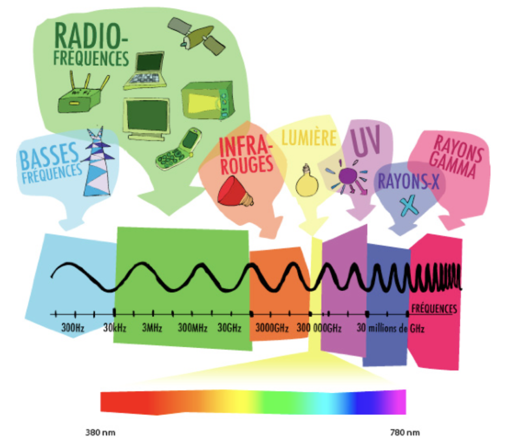

La couleur
La couleur est la perception humaine des ondes électromagnétiques (lumières) envoyées ou réfléchie par des objets. La lumière est l’ensemble des radiations électromagnétiques auxquelles les yeux humains sont sensibles.
 Le spectre de la lumière
Modèles colorimétriques - RVB et CMJN
 Modèle RVB et CMJN
Modèle RVB et CMJN
RVB - la synthèse additive
La synthèse additive est un procédé de trichromie qui permet de créer des images lumineuses les trois couleurs primaires lumineuses qui sont le rouge, le vert, le bleu (RVB ou RGB en anglais).
C'est la méthode utilisée pour l'affichage sur les écrans.
En informatique, ces trois composantes sont représentées chacune par des valeurs entre 0 (pas de couleur) et 255 (couleur en quantité maximale).
CMJN - la synthèse soustractive
La synthèse soustractive est un procédé de trichromie qui permet de créer des images en utilisant les trois couleurs primaires pigmentaires (des encres) qui sont le cyan, le magenta et le jaune, auxquelles on ajoute le noir (CMJN ou CMYK en anglais) .
Pour créer une couleur, on recouvre l’objet (la feuille de papier) d'une matière contenant des pigments colorés (encre) qui ont pour effet d’absorber certaines ondes lumineuses. Plus on mélange des couleurs différentes, plus les ondes sont absorbées et plus l’objet est sombre.
C'est la méthode utilisée par les imprimeurs.
Le mélange maximal des 3 couleurs cyan, magenta et jaune, ne donne pas exactement du noir. C'est pourquoi, dans ce modèle il est nécessaire d'ajouter la composante (l'encre) noire.
En résumé
Il existe d'autres modèles colorimétriques mais, dans ce cours, nous nous contenterons de ceux-ci.
Le choix du modèle colorimétrique dépend largement de l'utilisation finale de votre image :
- si l'image est destinée à être imprimée : on choisit CMJN
- si l'image est destinée à être affichée à l'écran : on choisit RVB
Puisque les différents espaces colorimétriques ne couvrent pas exactement les mêmes plages de couleurs, le passage d'un mode à l'autre peut entraîner un changement plus ou moins important des couleurs.
Contrastes de couleurs
La manière dont nous percevons les couleurs dépend essentiellement de l'environnement dans lequel nous les observons. C'est une affaire de contraste…
Laloi du contraste simultané des couleursest une caractéristique de la perception humaine des couleurs énoncée en 1839 par le chimiste Michel-Eugène Chevreul :
Le ton de deux plages de couleur paraît plus différent lorsqu'on les observe juxtaposées que lorsqu'on les observe séparément, sur un fond neutre commun.
On peut jouer sur des contrastes :
- de teinte
- de luminosité
- de saturation
Les normes d'accessibilité
Puisque tout le monde ne voit pas les couleurs de la même façon et dans un souci d'accessibilité, veillez à respecter les normes de contraste suivantes :
NIVEAU AA (CONTRASTE MINIMUM)
La présentation visuelle du texte et du texte sous forme d'image a un rapport de contraste d'au moins 4,5:1, sauf dans les cas suivants :
- Texte agrandi: le texte agrandi et le texte agrandi sous forme d'image ont un rapport de contraste d'au moins 3:1;
- Texte décoratif: aucune exigence de contraste pour le texte ou le texte sous forme d'image
- Logotypes: aucune exigence de contraste pour le texte faisant partie d'un logo ou d'un nom de marque.
NIVEAU AAA (CONTRASTE AMÉLIORÉ)
La présentation visuelle du texte et du texte sous forme d'image a un rapport de contraste d'au moins 7:1, sauf dans les cas suivants :
- Texte agrandi: le texte agrandi et le texte agrandi sous forme d'image ont un rapport de contraste d'au moins 4,5:1;
- Texte décoratif: aucune exigence de contraste pour le texte ou le texte sous forme d'image
- Logotypes: aucune exigence de contraste pour le texte faisant partie d'un logo ou d'un nom de marque.
Quelques outils pour vous y aider
- Colour contrast :

- Accessible Brand Colors :

- Contrast ratio :

- Colorable :

- Tanaguru contrast finder :

- Color Review :

Testez votre perception des couleurs…

Harmonies colorées
Voici quelques outils pour vous aider à construire vos harmonies colorées :
- Adobe Color CC :

- Paletton :

- Colorbox :

- Pigment :

- I want Hue :

- Colormind :
 :
: - Picular :

- Colordesigner :

- My Color Space :

- Colourco :

- Khroma :

Trouvez de l'inspiration…
Pour construire vos harmonies colorées, inspirez-vous des photos, des illustrations, des univers de jeux…
- Adobe Color CC : vous propose de construire des harmonies à partir d'images.
- labs.tineye.com/multicolr/ : vous permet de trouver des images à partir d'harmonies colorées.
- Google art palette: vous permet de trouver des oeuvres d'art à partir d'harmonies colorées.
- webcolourdata.com : génère un résultat à partir de copies d'écran.
- colorcombos.com/grabcolors : génère un résultat à partir des fichiers CSS
Les palettes de couleurs
Couleurs Web :
- websafecolors.info
- colors.commutercreative.com
- colours.neilorangepeel.com
- https://www.materialui.co/htmlcolors
Flat design :
Material design :
Autres :
- Microsoft Metro : https://www.materialui.co/metrocolors
- Microsoft Fluent : https://fluentcolors.com/
- Social media : https://www.materialui.co/socialcolors
L'utilisation de la couleur
- Selon les cultures : Colours in cultures
- Selon le genre : His and Hers Colors
- Selon les marques : Brand color
- Selon les films : The color of motion